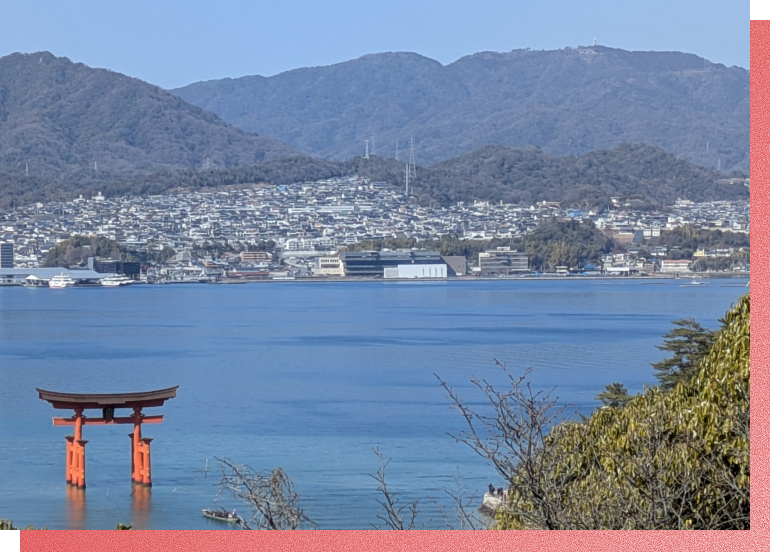

ナビオの製品は
世界の人々の健康に役立っています。
株式会社ナビオは、日本の伝統的な健康食品、納豆のすごさをそのまま生かしたサプリ原料の製造会社です。
納豆には、ナットウキナーゼをはじめ、健康に役立つ成分が多く含まれています。
納豆の健康成分を凝縮した原料の製造は、製品の約８割が海外に輸出され、世界中で多くの人々に愛用されています。


Product Features他社製品との違い
ダミータイトルダミータイトル ダミータイトル
この文章はダミーです。文字の大きさ、量、字間、行間等を確認するために入れています。この文章はダミーです。文字の大きさ、量、字間、行間等を確認するために入れています。この文章はダミーです。文字の大きさ、この文章はダミーです。文字の大きさ、量、字間、行間等を確認するために入れています。この文章はダミーです。文字の大きさ、量、字間、行間等を確認するために入れています。この文章はダミーです。文字の大きさ、
ダミータイトルダミータイトル ダミータイトル
この文章はダミーです。文字の大きさ、量、字間、行間等を確認するために入れています。この文章はダミーです。文字の大きさ、量、字間、行間等を確認するために入れています。この文章はダミーです。文字の大きさ、この文章はダミーです。文字の大きさ、量、字間、行間等を確認するために入れています。この文章はダミーです。文字の大きさ、量、字間、行間等を確認するために入れています。この文章はダミーです。文字の大きさ、
ダミータイトルダミータイトル ダミータイトル
この文章はダミーです。文字の大きさ、量、字間、行間等を確認するために入れています。この文章はダミーです。文字の大きさ、量、字間、行間等を確認するために入れています。この文章はダミーです。文字の大きさ、この文章はダミーです。文字の大きさ、量、字間、行間等を確認するために入れています。この文章はダミーです。文字の大きさ、量、字間、行間等を確認するために入れています。この文章はダミーです。文字の大きさ、

FAQよくある質問
-
Q
なぜナビオは独自のナットウキナーゼづくりにこだわるのですか？
-
Q
かすかに残っている納豆のにおいが気になります。これは消せませんか？
-
Q
ナットウキナーゼは動脈硬化の予防に役立ちますか？